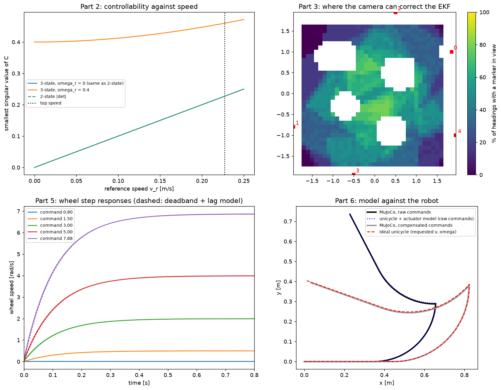

Criterion A
State-space model, controllability and observability of the Waffle Pi
Unicycle and tracking-error models (Week 5 D), controllability (Week 5 D1), discretisation (Week 5 C5), the
exact-arc discrete model and its Jacobian (Week 7 C.4), the 2-state cross-track model (Week 8 B).
Code: src/control/model.py;
evaluated by python tests/test_model.py.
Waffle Pi: wheel radius \(r = 0.033\) m, track \(b = 0.288\) m, actuator limit 7.88 rad/s, encoders at 4096 ticks/rev. With wheel speeds \(\omega_l, \omega_r\):
\[ v = \frac{r(\omega_r + \omega_l)}{2}, \qquad \omega = \frac{r(\omega_r - \omega_l)}{b}. \]A command that would exceed the usable wheel speed scales both wheels down together, which keeps the path curvature the controller asked for.
Before any model could match the robot, we found a bug in the ROBOTIS MuJoCo model: the chassis collision mesh includes the ball casters. Its convex hull touched the floor where the casters do, but with friction 1.0, and it carried 6.4 N of the robot's weight. MuJoCo also uses the larger friction of two touching geoms meaning the casters got the floor's friction too.
The effect: commanding 0.15 m/s gave 0.071 m/s, and the robot could not turn on the spot at all (0.001 rad/s for 0.5 commanded). The encoders overstated the motion so dead reckoning was also wrong. After giving the casters and chassis the casters' contact properties, with a higher contact priority, the encoders match ground truth: 0.117 against 0.116 m/s, and 0.281 against 0.279 rad/s.
Each wheel is a MuJoCo velocity servo (torque \(= k_v(\omega_{cmd} - \omega)\)) with Coulomb joint friction and armature. Two parameters can be derived from the model file and both were then measured on the simulated robot:
| Quantity | Derived | Measured |
|---|---|---|
| Deadband: each wheel turns this much slower than commanded and not below it | frictionloss / kv = 0.1 / 0.1 = 1.0 rad/s | 1.001–1.016 rad/s (mean 1.008) |
| Time constant | J / kv, J = 0.0110 kg m² (armature + wheel + m r²/2) → 0.110 s | 0.108 s |
| Turning resistance (identified NOT derived) | – | 0.020 ± 0.001rad/s shortfall at every turn rate from 0.2 to 1.4 rad/s |
The turning resistance is Coulomb-like. The same shortfall is seen whether the robot spins or arcs. It is most likely
tyre scrub across the tread. The usable wheel speed is therefore 6.88rad/s. This is a top speed of
0.227m/s (not the 0.26m/s the actuator limit suggests) and 1.58rad/s turning on the spot.
unicycle_to_wheels() compensates with +1.0rad/s per wheel and +0.02rad/s of turn rate in the
direction of motion.
Unicycle (Week 5 D), state \(\mathbf{x} = (x, y, \theta)\), input \(\mathbf{u} = (v, \omega)\):
\[ \dot x = v\cos\theta, \qquad \dot y = v \sin\theta, \qquad \dot\theta = \omega. \]The EKF uses the exact-arc discrete form and its Jacobian \(F\) (Week 7 C.4). \(F\) matches a numerical Jacobian to \(1.4\times10^{-10}\).
Tracking error in the reference frame about a reference moving at \((v_r, \omega_r)\), with \(\mathbf{e} = (e_x, e_y, e_\theta)\):
\[ \dot e_x = v\cos e_\theta - v_r + \omega_r e_y, \qquad \dot e_y = v \sin e_\theta - \omega_r e_x, \qquad \dot e_\theta = \omega - \omega_r \]Linearised about \(\mathbf{e} = 0\), with \(\delta\mathbf{u} = (v - v_r,\ \omega - \omega_r)\):
\[ A = \begin{bmatrix} 0 & \omega_r & 0 \\ -\omega_r & 0 & v_r \\ 0 & 0 & 0 \end{bmatrix}, \qquad B = \begin{bmatrix} 1 & 0 \\ 0 & 0 \\ 0 & 1 \end{bmatrix}. \]The 2-state model the LQR tracker uses (Weeks 5 D, 8 B) is the \((e_y, e_\theta)\) block when speed is not controlled:
\[ A = \begin{bmatrix} 0 & v_r \\ 0 & 0 \end{bmatrix}, \qquad B = \begin{bmatrix} 0 \\ 1 \end{bmatrix}. \]The \(\omega_r\) term enters as the curvature feed-forward \(\omega_r = v\kappa\). Sign convention: \(e = \) actual \(-\) reference (Week 8 writes \(\theta_d - \theta\)). The Jacobians were checked against sympy, and the error kinematics against the simulated unicycle.
| vr [m/s] | ωr [rad/s] | 3-state rank | min singular value | 2-state rank | det |
|---|---|---|---|---|---|
| 0.20 | 0 | 3 | 0.200 | 2 | −0.200 |
| 0.10 | 0 | 3 | 0.100 | 2 | −0.100 |
| 0.02 | 0 | 3 | 0.020 | 2 | −0.020 |
| 0 | 0 | 2 | 0.000 | 1 | 0.000 |
| 0.15 | 0.40 | 3 | 0.427 | 2 | −0.150 |
| 0 | 0.80 | 3 | 0.800 | 1 | 0.000 |
The model has full rank whenever the reference moves and loses rank at rest. That is the nonholonomic constraint - the robot cannot correct a sideways error without driving. Slow tracking is only weakly controllable as controllability also weakens in proportion to speed. This appears again in D, where the cross-track time conststant scales with 1/v, and in docking, which cannot remove a lateral offset.
Method: local observability of the linearised time-varying system over 10 camera frames (1 s), \(\mathcal{O} = [W H_0;\ W H_1 F_0;\ \dots]\). It is weighted by the perception noise model (\(W = R^{-1/2}\)), so the singular values are in standard deviations per unit of state error. Test pose (−1.4, 0.2, 270°), with markers 1 and 3 in view. "moving" means (0.15 m/s, 0.2 rad/s).
| Sensors | Still: rank, singular values | Moving: rank, singular values |
|---|---|---|
| encoders only | 0 [0, 0, 0] | 0 [0, 0, 0] |
| 1 marker, range + bearing | 2 [7136, 431, 0] | 2 [7513, 493, 0] |
| 1 marker, range only | 1 [431, 0, 0] | 2 [479, 17, 0] |
| 1 marker, bearing only | 1 [7136, 0, 0] | 2 [7513, 116, 0] |
| 1 marker, then another | 3 [6285, 1739, 244] | 3 [6474, 1839, 255] |
| 2 markers at once | 3 [8889, 2459, 346] | 3 [9254, 2636, 386] |
Over a room coverage map (0.1 m grid × 24 headings, 22,848 free poses), 60% of poses see no marker, 38% see one, and only 2% see two or more. The EKF therefore mostly corrects from markers seen one after another, with drift growing in between.
This result drove two design decisions. It is why there are wall landmarks besides the dock marker and, in the explore mission, it is why we added a LiDAR wall-line heading measurement. One marker plus the wall it hangs on observes the full pose.
Command sequence (v, ω) for (seconds): (0.15, 0) 3; (0.15, 0.4) 4; (0, 0.8) 3; (0.12, −0.3) 4; (0.2, 0) 2. Path about 1.9 m, 16 sec.
| Wheel commands | Prediction | Final position error | Final heading error |
|---|---|---|---|
| raw | ideal unicycle | 396mm | 43.1° |
| raw | unicycle + actuator model | 3mm | 0.5° |
| compensated | ideal unicycle | 25mm | 0.2° |
| compensated | unicycle + actuator model | 5mm | 0.3° |
The actuator model is an almost exact description of the robot. With compensated commands, the plain unicycle is good to about 25 mm over 16 s. The remaining error is the 0.11 s lag at command changes, so the controller can use the simple model.

tests/test_model.py. Top left: controllability against speed. Top right: where in the
room the camera can correct the EKF (% of headings with a marker in view). Bottom left: wheel step responses
against the deadband + lag model (dashed). Bottom right: the model vs the MuJoCo robot.